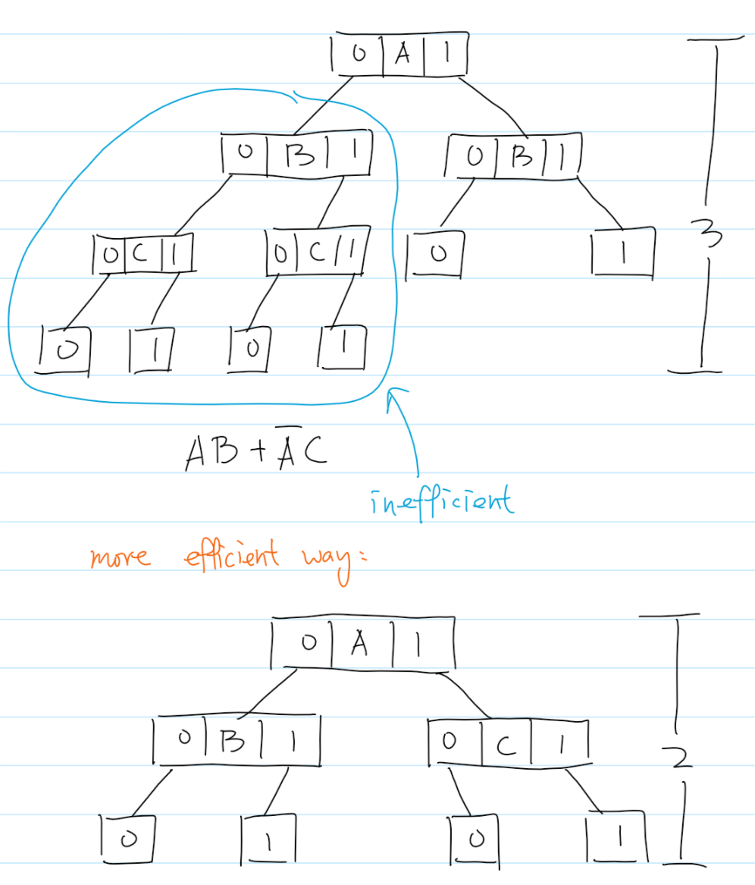

Decision tree learning uses a decision tree (as a predictive model) to go from observations about an item (represented in the branches) to conclusions about the item's target value (represented in the leaves). It is one of the predictive modelling approaches used in statistics, data mining and machine learning. Tree models where the target variable can take a discrete set of values are called classification trees; in these tree structures, leaves represent class labels and branches represent conjunctions of features that lead to those class labels. Decision trees where the target variable can take continuous values (typically real numbers) are called regression trees.
>
Decision Tree is almost the easiest thing to understand among all AI algorithms, since it is exactly the same logic as how a normal human being consider things. The decisions are made base on many different given conditions, and through decision tree, what we want is to find the best decision to make.
Clearly, when making decisions, we always want to be more efficient. Which means, the amount of levels of decisions is better to be less. Nobody would be satisfied with an AI that makes the correct decision to make after doing 1000 comparisons while there is only one field of condition is relevant to the final decision. Therefore, we need a good algorithm to decide which field is the best field to split a new branch at. This, is when the ID3 algorithm comes in.
ID3 is a algorithm designed particularly for growing a decision tree. It is invented by John Ross Quinlan in 1986 and it is the first effective algorithm to accomplish the mission. The algorithm uses the concept of kept reducing the information entropy of the whole tree system until it reaches 0. That is, always pick the field that will has the largest information gain \ lowest information entropy on the subtree after splitting next branch.
